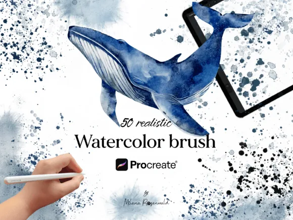
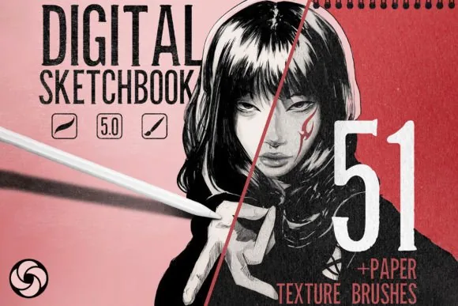

Learn the craft
Procreate Tutorials & Brush Guides
Original, technique-first articles for iPad artists, every guide tested against real artwork, every recommendation a tool we make and use.

Best Procreate Brushes for Anime & Manga (Soft Style, Line Art & Color)
The brush categories behind the soft, luminous anime look: manga ink liners, seamless blenders, watercolor washes and glow: plus the kits that deliver them.
Read article →
Best Procreate Brushes for Beginners (Start Right, Spend Almost Nothing)
New to Procreate? The free and low-cost brush kits that teach good habits: and how to know when you are ready to upgrade.
Read article →
Best Procreate Brushes for Line Art (Clean, Confident Lines Every Time)
What separates a professional liner brush from a scratchy one: and the Procreate line-art brush kits worth your money, from free fine liners to the 300+ vault.
Read article →
Best Procreate Brushes for Portraits (2026 Guide)
The exact brush categories a portrait artist needs in Procreate: sketch, skin, hair, blend and finish: plus the kits that cover each stage.
Read article →
How to Choose Procreate Brushes: A No-Regret Buying Framework
Stop buying brush packs you never open. Six questions that tell you whether a Procreate brush set is worth it: before you spend a dollar.
Read article →
How to Create Realistic Skin in Procreate: A Painter's Workflow
A step-by-step Procreate workflow for believable skin: undertones, blush zones, texture passes and the mistakes that make digital skin look plastic.
Read article →
How to Create Realistic Skin Texture in Procreate (Pores, Freckles & Wrinkles)
The texture layer that makes skin real: pore scale, where texture lives in the light, freckle placement rules, and aging marks that add believability.
Read article →
How to Create Realistic Watercolor in Procreate
Bleeds, blooms, granulation and paper grain: the technique layer behind convincing digital watercolor, with the brushes that simulate each behavior.
Read article →
How to Install Procreate Brushes (.brushset) on iPad: Step by Step
Downloaded a .brushset and not sure what to do next? The exact tap-by-tap process to install Procreate brush sets from a ZIP, plus fixes for common problems.
Read article →
How to Make Digital Art Look Traditional (7 Techniques That Actually Work)
Why most digital art looks "too clean": and the brush, texture and color techniques that give iPad paintings real traditional soul.
Read article →
How to Paint Realistic Hair in Procreate (Without Drawing Every Strand)
The mass-first hair workflow for Procreate: block volume, carve light, then add directional strands and flyaways with the right brushes.
Read article →
Procreate Blending Brushes Explained: How to Blend Without "Plastic Skin"
Why smooth airbrushes ruin paintings, which blending brushes preserve texture, and the smudge-vs-brush techniques pros actually use.
Read article →
Best Procreate Canvas Size & DPI for Digital Painting (and When It Matters)
300 DPI? 600? Why massive canvases slow your iPad and small ones ruin prints: the practical canvas guide for illustrators and portrait artists.
Read article →
The Complete Procreate Portrait Workflow (Canvas Setup to Final Polish)
The full portrait pipeline used by professional iPad artists: canvas setup, sketch, flats, form shadows, skin texture, hair, eyes and the final grade.
Read article →
Procreate Stamp Brushes vs Painting Brushes: When to Use Each
Stamp brushes get dismissed as shortcuts: but used right they're a professional speed tool. When stamps win, when they hurt, and how to paint over them.
Read article →
How to Design Tattoos in Procreate: The Linework-to-Stencil Workflow
From needle-weight liners to dotwork shading: a complete Procreate workflow for tattoo flash and client-ready concepts on iPad.
Read article →